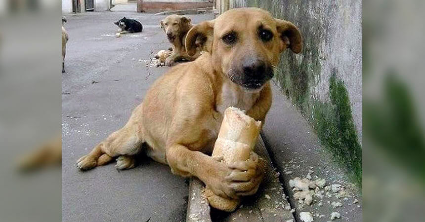
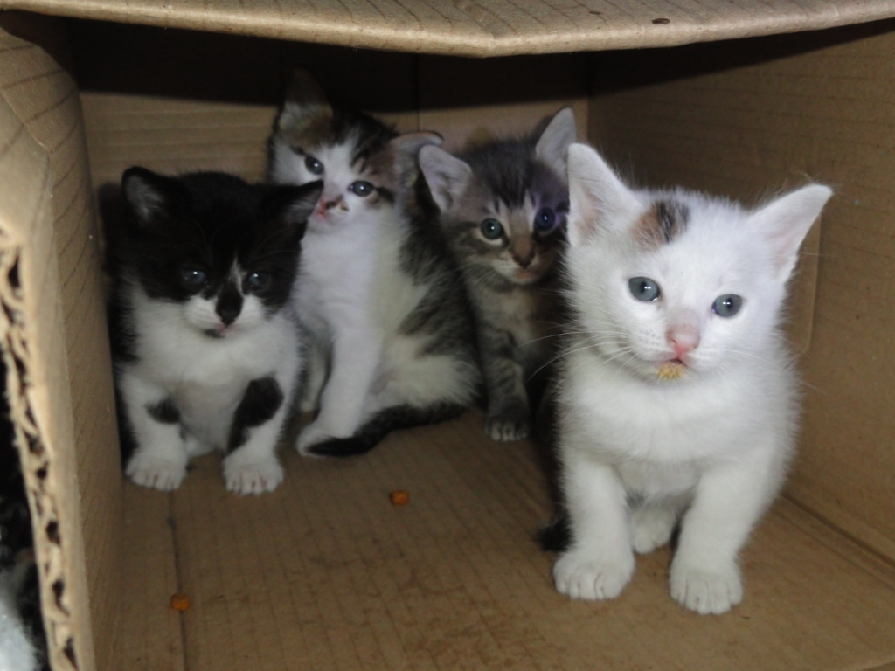
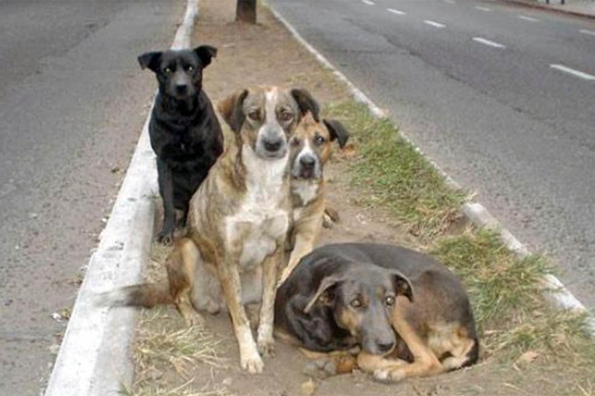
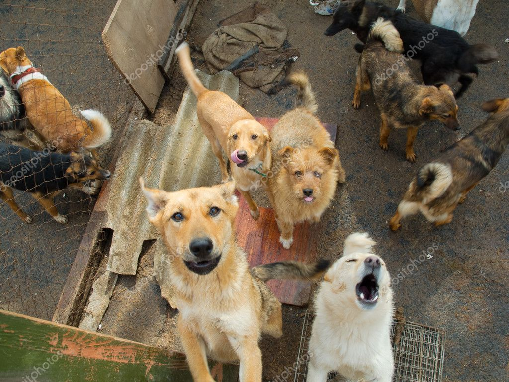
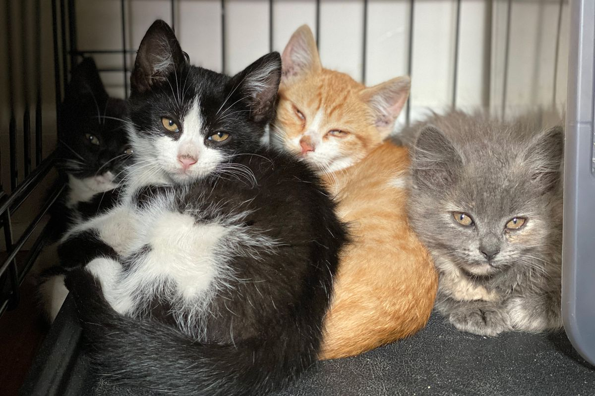

Refugio 4 patas
Fecha: 10 de Enero
Localidad: Cinco Saltos
Contacto: 299123456
Email: unemail@hotmail.com
Descripcion: Estamos en calle Saavedra 522, acercate a Refugio 4 patas si queres darle una nueva oportunidad de tener una familia responsable a un amigo de 4 patas.

Transito o adopcion
Fecha: 5 de Noviembre
Localidad: Barda del medio
Contacto: 299123456
Email: unemail@hotmail.com
Descripcion: Necesitamos voluntarios para dar transito a 3 perritos que viven en la calle mientras se recuperan de la castracion y les encontramos un hogar

Gatitos en adopcion
Fecha: 12 de octubre
Localidad: Neuquen
Contacto: 299123456
Email: unemail@hotmail.com
Descripcion: Tenemos 4 gatitos que ya cumplieron 50 dias para dar en adopcion.

Necesitan un nuevo hogar
Fecha: 3 de Mayo
Localidad: Fernandez Oro
Contacto: 299123456
Email: unemail@hotmail.com
Descripcion: el dueño de estos perritos fallecio y quedaron solitos, necesitan un hogar urgente por favor ayudenos a difundir

Guarderia Canina GuauGuau
Fecha: 26 de Abril
Localidad: Plottier
Contacto: 299123456
Email: unemail@hotmail.com
Descripcion: Queres cambiar tu vida para siempre? Veni a conocernos y llevate un amigo fiel. No te vas a arrepentir...
